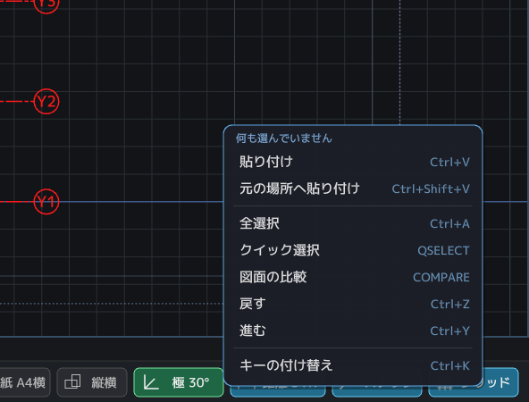

2. Using the Cursor
Selecting one object
When no command is running, the cursor is your selection tool.
Click an object = it is selected. Click another = it joins the selection.
Click empty space = everything is deselected.
Selecting a whole connected run at once
Double-click a line or an arc and every line joined to it end to end is selected together.
- A rectangle is made of four lines, so this takes all four in one go.
- Long runs such as grid lines or walls come away in a single grab.
- Where the run branches, the branches come too. The history at the bottom left always says how many were selected, so if it took too many, press Esc and choose again.
- This also adds to the selection, so whatever you had selected before is not lost.
Selecting with a window
Drag with the left button from empty space to stretch a frame.
- Left to right = a solid blue frame. Only objects entirely inside it are selected.
- Right to left = a dashed green frame. Objects merely touched by it are selected too.
This is the same convention as most CAD programs. Window selection adds to the selection, so you can gather things in several passes.
似たものを選ぶ
図形を一本選んで右クリック→［似たものを選ぶ］。
（タブ「直す」の［似たものを選ぶ］でも同じです）
選んだ図形と種類・画層・名前が同じものを、図面ぜんぶから選びます（小窓なら SELECTSIMILAR）。
- 名前＝部品なら部品の名前、寸法なら寸法スタイル、文字なら書体スタイル、ハッチなら模様の名前。
- 「この画層の文字を全部」「この柱と同じ部品を全部」の最短手です。
- 選択に加わる作法なので、前の選択は消えません。
クイック選択（条件で選ぶ）
右クリック→［クイック選択…］（小窓なら QSELECT）。
（タブ「直す」の［クイック選択］でも開きます）
図面にある種類・画層・色・線種・太さが札で並び、何本あるかが出ます。札を押すと、その条件に合う図形だけが数に残ります。
- 押していない欄は「問わない」。同じ欄で二枚押すと「どちらか」。
- 札の数は、ほかの欄の条件のもとでの本数です（0 の札は薄く）。
- 色は見えている色で数えます（画層の色に従う線は、その画層の色）。
- 線種の札の頭には、その線種の見本の線が出ます（名前を知らなくても、線の姿で選べます）。太さは画層が持つ太さです。
- ［探す］の欄に言葉を打つと、その言葉を含む文字・段落文字・引出線だけが数に残ります（打つたびに数え直します・英字の大小は区別しません）。Enter・Esc で打つのをやめ、×で言葉を消します。
- 部品が置いてある図面では［部品］の欄に部品の名前が並びます。
- 色・線種・太さの欄の最後の［全部から選ぶ ▼］で、図面に無い値も選べます（色＝基本色と 255 色の表／線種＝持参の全部を見本つきで、ホイールで送る／太さ＝ペンの一覧を実際の太さの線で）。図面に無い値を押すと 0本と出ます（「この図面に一点鎖線は無い」）。
- 値が一つしか無い欄は、札にせず「すべて 実線（37本）」と言います。
- 選んでから開くと「いま選んでいる中から」絞れます。
- ［この n本を選ぶ］＝選び直す／［今の選択に足す］＝足す。
- ［今の選択から外す］＝条件に合う図形を、選んでいる中から抜きます。
- 足元の「選ぶのは」で［合わないもの（以外）］を押すと、押した札のどれかに外れる図形を数えます。例：線種［中心］を押して［以外］＝一点鎖線でない図形ぜんぶ。
- 板は浮く板です。帯を掴んで好きな所へ動かせます。窓の大きさを変えても、同じ側・同じ割合の所へついてきます。
- 開いたまま、図面を動かす・拡大する・選ぶ・消す、ができます。選んでも板は閉じません（選ばれた様子を見ながら条件を直せる）。閉じるのは右上の×です（Esc は図面の側に効きます）。
- 画層が多い図面は、画層の札を［次 ›］で送ります。押した札は、頁を送っても「押した札：…」の一行に出ます。
- 非表示・ロックの画層は選びません（全選択と同じ守り）。
Overlapping objects
Where objects lie on top of each other, press Tab to cycle through the candidates.
Grips
Select an object and small squares — grips — appear at the ends and at the midpoint of the line.
- Grab an end □ = stretch or shorten that end. Click where it should reach; or point the cursor the way you want it to go and type a number + Enter for that distance. Turn Ortho on (F8) to stretch at right angles.
- Grab the midpoint □ = move the whole line.
- Esc = cancel (the line does not move a hair).
A line stretches without your typing a single command — a habit inherited from the original.
Grips on a polyline (rectangles and polygons)
You tell them apart by shape. Look at a grip and you know what it can do.
- □ (square) = a vertex. Grab it and that one point moves.
- ▭ (rectangle) = the midpoint of an edge. Grab it and the whole edge moves parallel to itself (both end vertices move together — the edge keeps its direction).
They are shaped differently from the □ on a line because they do different things.
- Click where it should reach, or type a number + Enter — both work exactly as they do on a line.
- A rounded edge (an arc) gets no midpoint grip. The middle of an arc is not the middle of its chord, and a marker placed there would be telling you a lie.
- A polyline with a great many vertices gets no grips at all (the screen would fill with squares and become harder to grab, not easier). Touch one and a note says つまみは出していません — “grips are not shown”.
Right-click = the place to remember things

“Now, what was that command called?” — right-click.
You can get there without remembering any shortcut.
- 図形を選んで右クリック＝その図形にする用事が並びます。切り取り・コピー・基点を指定してコピー・貼り付け／移動・複製・回転・鏡像・削除／現在画層へ・この画層を現在に・画層に従わせる／字高…・文字を編集・仮想交点／部品化・プロパティ。
- With nothing selected, right-click and you get the jobs for the whole drawing: Paste, Paste to original coordinates / Select all, Undo / Alias board (opens the list of shortcuts).
- 各行の右端の字は、その一行を呼ぶ手の早道です。鍵のあるものは鍵（⌘C など）、無いものは小窓の言葉（M・CO）。※鍵をエイリアスボードで替えると、ここの字も一緒に変わります。
- Right-click in the middle of drawing or placing = cancel / finish. (Ending a run of copies, taking back one hatch point, and so on.)
Copy and paste
- ①Select the objects and press ⌘C (copy) or ⌘X (cut).
- ②Press ⌘V (paste) and the bundle follows your cursor.
- ③Click where you want it = it is placed there. You can go on placing as many as you like. Finish with a right-click or Enter.
- ⌘⇧V＝控えた時と同じ座標へ、そのまま置きます。※同じ図面で、控えた元の図形が残っている間は使えません（元の絵にぴったり重なるだけになるため）。献立でも薄くなります。＝別のタブへ、同じ座標で持っていくときの道具です。⌘X（切り取り）の後なら、同じ図面でも元の場所へ戻せます。
- ⌘C の持ち手は形の左下です。原点を基準にした図面を別のタブへ運び、⌘V で原点をクリックすると、左下が原点に来ます。
- ⌘⇧C（基点を指定してコピー）＝持ち手の点をクリックで指して控えます。原点を指して控えれば、⌘V で原点をクリックして同じ座標に置けます。
- 複製（CO）でも別のタブへ運べます＝基点をクリック→タブを替えて→貼り付け先をクリック（基点と同じ点なら、同じ座標に置かれます）。
- You can paste into another tab. Layers that do not exist there travel with their colour and linetype (and the block definitions travel too).
- 小窓の言葉でも呼べます＝COPYCLIP・COPYBASE・CUTCLIP・PASTECLIP・PASTEORIG・SELALL（本家と同じ名前です）。
- 移動・回転・拡大縮小などの途中でタブを替えると、道具はやめます（見ていない図面の図形を書き換えないため）。
Hover (just touching)
Bring the cursor near an object and a note tells you what it is.
You can find out what something is before you press anything.
Changing the colour of the crosshairs
The crosshairs are the lines you look at longest on this screen.
Which colour is easiest to see differs from person to person. You can change it.
Settings on the tool shelf → Appearance → Crosshair colour.
Each press moves to the next colour (teal, white, yellow, yellow-green, orange, pink, sky).
The panel floats and does not hide your drawing — so you can compare while watching the crosshairs themselves.
※ If none of the seven suits you, write a line such as 十字の色 #FF00AA in the settings store (below) and it becomes that colour. The settings store is a plain text file that remembers what you chose in the Settings panel. You can open it in a text editor, correct it by hand, and hand the whole file to somebody else.
Changing the size and weight of the crosshairs
Two more rows in the same Settings → Appearance.
- Crosshair size = a percentage. 100 fills the screen (this is how it starts). Make it smaller and the arms get shorter. On a crowded drawing, where you cannot tell which lines are your own crosshairs, smaller is easier. (The same measure as CURSORSIZE — the same numbers work.)
- Crosshair weight = pixels. 1 is the starting thinness. 2 makes them distinct. When you want them easier to see, weight helps more than length.
Press either one and the field becomes ready on the spot. Type a number and press Enter to accept, Esc to cancel (every number in the Settings panel works this way).
Correct the manual there and this one is corrected the same day.
絵は Windows 版の画面です（2026年11月に撮り直しました）。Mac 版では、Ctrl が ⌘、Alt が ⌥ になります。